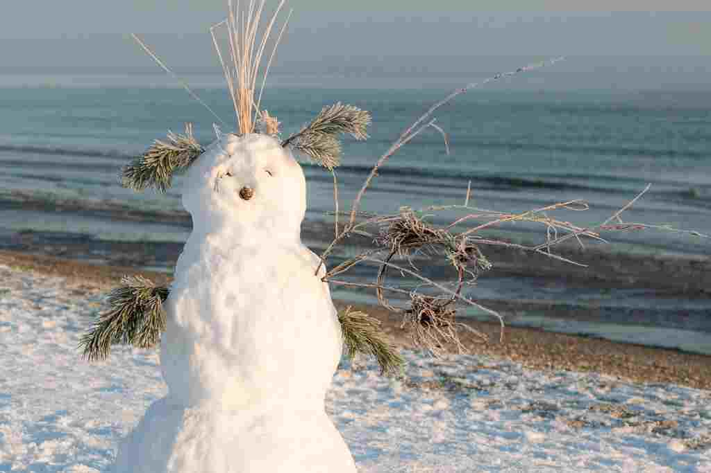

About me
I’m Snowglob, a kid learning CSS who has the grand experience of making one good(-ish) website.
I like all things FOSS (your mom included), playing games, writing, customizing vim, learning… about UI and UX, and watching Anime. I’ve been learning CSS for some time now, most of that time was spent on building this website. That aside, FMAB was amazing, the first opening had no reason to go so hard.
What I’m doing now
Last updated 27 March, 2023.
- Breathing (hopefully)
Watching Monster, almost done- Done with Monster. Pretty good anime. I really liked the philosophical theme
- Watching Death note, for the second time
- Learning CSS
- Working on this website
- Thinking about stuff to write in my blog.
Connect
You can contact me on the following platform(s):
- XMPP: snowglob at conversations.im
- Mastodon: snowglob at toot.community
About the website
This website’s main purpose is to give me a place on the internet. This website's colors are inspired from the gruvbox color scheme. I’ve plagiarised from Tania Rascia, Udit Samani, Michael Schnerring, TheEvilSkeleton, and probably more. I also wrote a blog post about the making of this website, it covers the resources which have helped me a lot. If you’re new to CSS, use it as a to-don’t list. This website has no JavaScript, no ads, and lastly, no good content.
Copyright
The font typeface used for body text is Inter by Rasmus Andersson.
 This work is licensed under a Creative Commons Attribution 4.0 International License.
This work is licensed under a Creative Commons Attribution 4.0 International License.
"Snowman in the sun rise" by J.Triepke is licensed under CC-BY-3.0 /Desaturated from original.
"Snowman in the sun rise" by J.Triepke is licensed under CC-BY-3.0 /Desaturated from original.
Icons by Phosphor icons and Google Material icons. Phosphor icons licensed under MIT license. Google Material icons licensed under Apache license. 2.0.
{kind=link}
{kind=link}